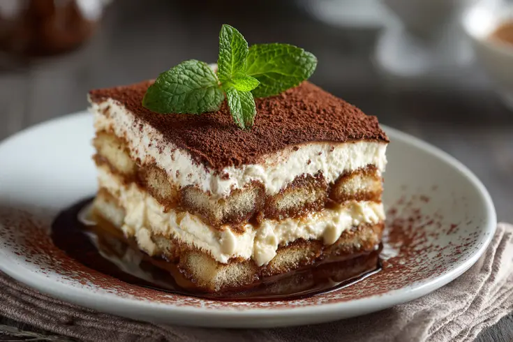

The classic Italian tiramisu recipe involves using raw yolks. If you’re afraid to eat eggs without cooking them, you can whip the cream in a water bath to heat the yolks.
Wash the eggs thoroughly, then carefully separate the whites from the yolks. The whites won’t be needed in this recipe; you can use them to make meringue or a protein omelet.
Whisk the yolks with sugar until you get a light, fluffy, homogeneous mass using a mixer with a whisk attachment. You can place the bowl with the yolks on a pot with boiling water to whisk them in a water bath for greater safety, but after whisking, you must immediately remove the cream from the water bath.
Add mascarpone to the beaten yolks add gently mix with a spatula.
Brew the coffee. Traditionally, a small amount of fortified Marsala wine is added to the coffee for soaking, but you can also use amaretto or even cognac, or you can do without alcohol altogether.
Place a small amount of cream in a sufficiently deep dish. Quickly dip the cookies in the coffee and arrange them in a row.
It’s important not to let the cookies soak for too long — 2–3 seconds is enough, otherwise the dessert will turn out too runny
Place approximately half of the cream on top of the cookies, then place another row of sticks, making sure they are placed across from the previous ones. Place the remaining cream and spread it evenly. Sprinkle the dessert with cocoa powder using a sieve.
Cover the mold with plastic wrap or seal it tightly and put it in the refrigerator for 3–4 hours to let it steep.
Classic tiramisu is ready.